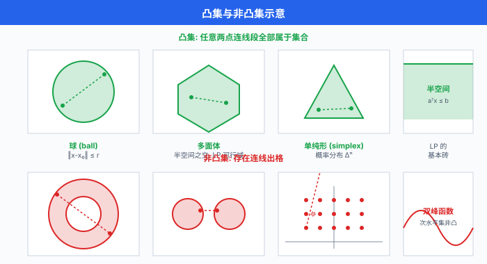
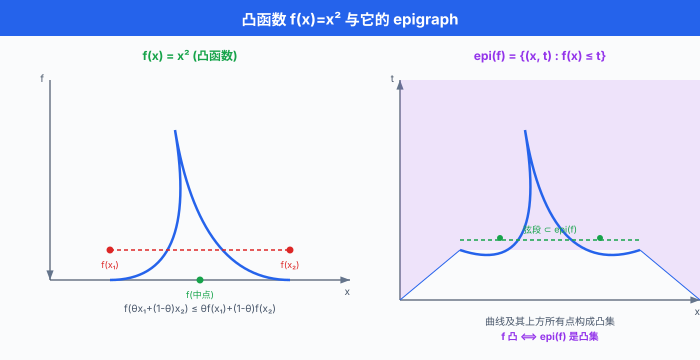

凸集与凸函数¶
一句话总结：凸性是"局部最优 = 全局最优"的护身符；凸集封闭在两点连线上，凸函数把连线抬到图像之上，这两个几何条件让优化问题从一片混沌变得可以求解。
把一般的优化问题想成在一片黑漆漆的山地里找最低点 —— 你只能感受脚下的坡度，谁也不敢保证走到的那个坑就是全世界最深。 凸性是一张地质证书：它保证整块地形只有一个最低洼，你但凡沿着下坡方向走，走到停下来的那一刻就是终点。 这一节我们讲这张证书的两条条款 —— 凸集与凸函数，以及它们在什么运算下会自动传染，什么时候会失效。 对深度学习的读者，这不是一段古老的数学历史课：SVM、ridge、LASSO 是凸的活教材，神经网络虽然整体非凸，但局部凸近似 (over-parameterized regime、NTK、mean-field) 是过去五年理解 DL 训练的主要工具.
-
上一节我们把"怎么解"讲到底了 —— 迭代法把大稀疏系统拧到收敛。 这一节主题突然转向：什么问题保证有解、且解全局唯一? 答案是"凸的". 一个凸优化问题，只要你能爬下山，就一定爬到了地球上最深的谷底；一个非凸问题，你走到停下来的那一刻，世界上其他地方可能还有一个深得多的坑，你却永远不会知道。
-
这不是抽象的哲学问题。 现代机器学习的算法分层，本质就是凸的部分与非凸的部分的分界线:
- 凸：线性回归、岭回归 (ridge)、LASSO、SVM、逻辑回归、CRF 训练 —— 都保证全局最优。
- 非凸：神经网络训练、矩阵分解、字典学习、EM 算法收敛点、GAN 的鞍点问题 —— 只能给出局部保证。
-
凸松弛：组合优化 (整数规划) 与 NN robust verification 里的经典技巧，把非凸问题包在一个凸壳里，求解后再收紧。
-
所以读懂凸性，不只是为了 SVM 和 LASSO，而是为了判断你手头这个 loss 到底会不会在训练时跟你玩阴的.
凸集：两点连线不出格¶
- 一个集合 \(C \subseteq \mathbb{R}^n\) 叫做凸集 (convex set)，若对任意两点及它们之间的线段，整条线段都还在集合里:
-
这条件很朴素：我拿走两个成员，把它们的加权平均 (走廊上任意一点) 塞回去，集合必须接得住。 直觉上凸集是"没有凹陷、没有洞、没有断层"的形状。
-
具体长什么样:
- 半空间 (halfspace): \(\{x : a^\top x \le b\}\) —— 用一个超平面把 \(\mathbb{R}^n\) 切两半，取一半。
- 球 (ball): \(\{x : \|x - x_0\| \le r\}\) —— 直觉上凸得最典型。
- 多面体 (polyhedron)：有限个半空间的交，即 \(\{x : Ax \le b\}\). 线性规划的可行域就是这货。
- 半正定锥 (positive semidefinite cone): \(\mathbb{S}^n_+ = \{X \in \mathbb{S}^n : X \succeq 0\}\) —— 所有对称半正定矩阵组成的集合，半正定 (positive semidefinite, PSD) 是 SDP (半定规划) 的舞台。
-
单纯形 (simplex): \(\{x \in \mathbb{R}^n_+ : \sum x_i = 1\}\) —— 概率分布住的地方。
-
反例 (不是凸集):
- 环 (annulus) \(\{x : 1 \le \|x\| \le 2\}\)：直径两头连线穿过中心的洞，出格了。
- 两个不相交圆盘的并集：从一个圆盘到另一个圆盘的连线要经过空白区，挂了。
- 整数集 \(\mathbb{Z}^n\)：从 \((0,0)\) 到 \((1,1)\) 的线段中点 \((0.5, 0.5)\) 不是整数，立刻破功。 这就是整数规划为什么难 —— 它的可行域根本不是凸集。

凸集的保凸运算：你可以自由拼装¶
- 手上有几个凸集积木，如何生出更多凸集？记住四条保凸运算，剩下的可以现推。
1. 交集 (Intersection)¶
- 若 \(C_1, C_2\) 都凸，则 \(C_1 \cap C_2\) 也凸。 而且任意多个 (甚至不可数无穷个) 凸集之交依然凸:
-
直觉：两个凸集的公共部分继承了两边"连线不出格"的性质。 这是多面体是凸集的根本理由 —— 多面体就是有限个半空间的交。
-
反例警告：凸集的并集通常不凸 (两个圆盘中间空白). 所以 union 不在保凸操作的清单里。
2. 仿射变换 (Affine Transformation)¶
-
若 \(C \subseteq \mathbb{R}^n\) 凸，\(f(x) = Ax + b\) 是仿射映射，则像集 \(f(C) = \{Ax + b : x \in C\}\) 也凸。 反过来仿射的原像也保凸：\(f^{-1}(D) = \{x : Ax + b \in D\}\) 若 \(D\) 凸则 \(f^{-1}(D)\) 凸。
-
这条给了我们大量组合套路。 比如椭球 \(\{x : (x - x_0)^\top P^{-1} (x - x_0) \le 1\}\) 是单位球在仿射变换 \(x = P^{1/2} u + x_0\) 下的像，因此凸。
3. 透视变换 (Perspective)¶
- 透视函数 \(P(x, t) = x/t\) 定义在 \(\mathbb{R}^n \times \mathbb{R}_{++}\) (最后一个坐标严格正) 上。 它保凸：若 \(C \subseteq \mathrm{dom}(P)\) 凸，\(P(C)\) 凸。 直觉是"针孔相机模型"——把 \((x, t)\) 除以第 \(n+1\) 维实现三维投影到二维，凸的物体投出的影子还是凸的。
4. 线性分式函数 (Linear-Fractional)¶
-
更一般的 \(f(x) = \frac{Ax + b}{c^\top x + d}\) (分母保持正) 也保凸。 常出现在概率对偶与几何规划里。
-
有这四条，加上"半空间凸"这一枚种子，就能证明几乎所有实际问题的可行域都是凸的. 反过来一旦某个约束破坏这些结构 (如 \(x^2 = 1\) 这种非线性等式)，凸性就崩了。
凸函数：三个等价定义¶
- 凸函数 (convex function) 有三种等价的判据，一个比一个好用。 假设 \(f: \mathbb{R}^n \to \mathbb{R}\)，定义域 \(\mathrm{dom}(f)\) 是凸集。
定义 1：连线抬起 (基本定义)¶
- 大白话：函数值不高于线性插值. 图像沿任意两点连线画一条弦，函数图像永远在弦的下方。 若不等号严格成立 (\(x \ne y, \theta \in (0,1)\))，叫严格凸 (strictly convex).
定义 2: epigraph 是凸集 (几何定义)¶
- 定义epigraph (上境图):
- 也就是"函数图像及其上方所有点". 那么 \(f\) 凸 \(\iff\) \(\text{epi}(f)\) 是 \(\mathbb{R}^{n+1}\) 中的凸集。 这个视角把凸函数问题几何化了：一切凸函数命题都能翻译成对 epigraph 这个凸集的命题。

定义 3：一阶条件 (Gradient 判据)¶
- 若 \(f\) 一次可微，则 \(f\) 凸 \(\iff\)
-
大白话：函数图像处处在切线的上方. 或者说 \(f\) 在 \(x\) 处的一阶泰勒近似是一个全局下界. 这个性质极其有用 —— 它是所有一阶方法 (梯度下降、加速梯度法) 收敛证明的起点。
-
一阶条件还立刻推出一个魔法般的结论：对凸函数，\(\nabla f(x^*) = 0\) 蕴含 \(x^*\) 是全局极小. 因为对任意 \(y\):
- 这就是"凸问题 = 局部最优 = 全局最优"的具体面目。
定义 4：二阶条件 (Hessian 判据)¶
- 若 \(f\) 二次可微，则 \(f\) 凸 \(\iff\) Hessian 处处半正定:
- 严格凸对应 \(\nabla^2 f(x) \succ 0\) (正定)；但反过来"处处正定"是充分不必要 (如 \(f(x) = x^4\) 在原点二阶导为零，但仍严格凸). 实际写代码判定凸性，二阶条件是最省事的一种：计算 Hessian，检查特征值是否都非负。
凸函数的经典例子¶
- 仿射函数 \(f(x) = a^\top x + b\)：既凸又凹 (等式成立). 世界上唯一同时凸且凹的函数就是仿射。
- 二次函数 \(f(x) = \frac{1}{2} x^\top P x + q^\top x + r\)：凸 \(\iff P \succeq 0\). 岭回归的目标函数是这货。
- 指数 \(e^{ax}\)：凸 (二阶导 \(a^2 e^{ax} \ge 0\)).
- 幂函数: \(x^p\) 在 \(x > 0\) 上凸当 \(p \ge 1\) 或 \(p \le 0\)；凹当 \(0 \le p \le 1\).
- 负对数 \(-\log x\) (\(x > 0\))：凸 (熵、KL 散度、逻辑回归的常客).
- 仿射的最大值 \(f(x) = \max_i (a_i^\top x + b_i)\)：凸 (它是分段线性凸函数的一般形式).
- 所有范数 \(\|x\|_p\) (\(p \ge 1\))：凸 (三角不等式直接给出).
- Log-Sum-Exp (LSE):
-
LSE 凸，是 Softmax 的父亲，也是逻辑回归 loss 的核心。
-
LSE 凸性的证明直觉 (不写全过程，但抓住关键). 计算 Hessian 得
-
验证 \(v^\top \nabla^2 f(x) v \ge 0\) 归约成 Cauchy-Schwarz 不等式的一个变形。 那个不等式就是"某某平方和 \(\ge\) 平方的某某和"的一次巧妙调用。 一句话：LSE 的 Hessian 半正定，因为 Cauchy-Schwarz 兜底.
-
Softmax 相关的 DL 连结: Softmax 是 LSE 的梯度：\(\sigma(x) = \nabla \mathrm{LSE}(x)\). 交叉熵损失 \(\mathcal{L}(x, y) = \mathrm{LSE}(x) - y^\top x\) (one-hot label) 在 \(x\) 上凸 —— 这就是逻辑回归凸的本质原因。 但当 \(x\) 是某个神经网络的输出，神经网络关于权重不凸，整体损失也就非凸了。
import numpy as np
import matplotlib.pyplot as plt
# 三种凸函数可视化: 二次 / 指数 / LSE(2维)
x = np.linspace(-3, 3, 300)
fig, axes = plt.subplots(1, 3, figsize=(15, 4))
# 1) 二次
axes[0].plot(x, x**2, 'b-', linewidth=2, label=r'$f(x) = x^2$')
# 连线抬起演示
axes[0].plot([-2, 2], [4, 4], 'r--', linewidth=1.5, label='chord')
axes[0].fill_between([-2, 2], [4, 4], [(-2)**2, 2**2], alpha=0.1, color='red')
axes[0].set_title('二次: 严格凸')
axes[0].legend()
axes[0].grid(alpha=0.3)
# 2) 指数
axes[1].plot(x, np.exp(0.8 * x), 'g-', linewidth=2, label=r'$f(x) = e^{0.8x}$')
axes[1].set_title('指数: 严格凸')
axes[1].legend()
axes[1].grid(alpha=0.3)
# 3) LSE (2D, 取 x2 = 0)
x_lse = np.linspace(-4, 4, 300)
lse_vals = np.log(np.exp(x_lse) + np.exp(0.0))
axes[2].plot(x_lse, lse_vals, 'm-', linewidth=2, label=r'$\mathrm{LSE}(x_1, 0)$')
axes[2].plot(x_lse, np.maximum(x_lse, 0.0), 'k--', linewidth=1, label=r'$\max(x_1, 0)$')
axes[2].set_title('LSE: max 的光滑上界')
axes[2].legend()
axes[2].grid(alpha=0.3)
plt.tight_layout()
plt.savefig('ch24_03_convex_functions.svg', bbox_inches='tight')
plt.show()
凸函数的保凸运算¶
- 与凸集同理，凸函数在一组操作下自动传染. 记住四条 + 一条陷阱，就能徒手判定绝大多数机器学习目标函数的凸性。
1. 非负加权和¶
- \(f = \sum_i w_i f_i\)，若所有 \(f_i\) 凸且 \(w_i \ge 0\)，则 \(f\) 凸。 岭回归目标 \(\|Ax - b\|^2 + \lambda \|x\|^2\) 就是两个凸函数的正加权和，立刻是凸的。
2. 与仿射的复合¶
-
\(g(x) = f(Ax + b)\)，若 \(f\) 凸则 \(g\) 凸。 直觉：仿射变换保持凸集结构，复合过来 epigraph 还是凸集。
-
LASSO 的目标 \(\|Ax - b\|^2 + \lambda \|x\|_1\): \(\|\cdot\|^2\) 是二次凸，\(\|\cdot\|_1\) 是范数凸，与仿射复合仍凸，非负加权和仍凸。
3. Pointwise Maximum / Supremum¶
- \(f(x) = \max\{f_1(x), \ldots, f_m(x)\}\)：每个 \(f_i\) 凸 \(\Rightarrow f\) 凸。 更一般:
-
一族凸函数的上确界仍凸 (即使 \(\mathcal{A}\) 无穷).
-
几何直觉：每个 \(f_i\) 的 epigraph 是凸集，\(\max\) 的 epigraph 是所有 epigraph 的交 (\(\{(x, t) : t \ge f_i(x), \forall i\}\))，凸集交仍凸。
-
SVM 的 hinge loss \(\max(0, 1 - y_i (w^\top x_i + b))\) 就是"两个仿射的 max"，立刻凸。
4. 与凸单调函数的复合¶
-
\(h\) 凸单调不减，\(g\) 凸 \(\Rightarrow f = h \circ g\) 凸。 例：\(g\) 是任意凸的，\(h(t) = e^t\) 凸单调不减，于是 \(e^{g(x)}\) 凸。
-
陷阱：反之不成立。 \(h\) 凸但不单调 (如 \(t^2\) 在 \(\mathbb{R}\) 上)，复合过来会破坏凸性。 比如 \((x^3)^2 = x^6\) 是凸的，但 \((-x)^2 = x^2\) 凸没错 —— 这里陷阱在方向搞对。
-
更靠谱的记忆：凸凸凸复合的合法组合有严格的 \(h\) 单调方向要求，具体见 Boyd & Vandenberghe 第 3 章表 3.1.
强凸性：底部更陡¶
- 凸函数保证局部即全局，但收敛快慢还差一层。 强凸 (strongly convex) 加一个二次下界:
- 几何上：一阶泰勒的下界从切平面加强为切抛物面 —— 底部不但凸，还有一个明显的曲率。 等价条件 (二次可微时):
- 强凸的实际意义：梯度下降在强凸函数上线性收敛. 具体来说，迭代 \(k\) 次后:
-
达到误差 \(\varepsilon\) 只要 \(O(\log(1/\varepsilon))\) 次迭代 —— 指数级快，与稀疏系统里 CG 的 \(O(\log(1/\varepsilon))\) 是同一档。
-
岭回归: \(\|Ax - b\|^2 + \lambda \|x\|^2\) 的 Hessian 是 \(2A^\top A + 2\lambda I\)，天然强凸 (强凸模数 \(m = 2\lambda\)). 这是加正则化的一个优化理论理由 —— 不只是防过拟合，也让训练收敛更快。
-
纯 LASSO \(\|Ax - b\|^2 + \lambda \|x\|_1\)：凸但未必强凸，因为 \(\ell_1\) 项不加曲率。 得靠特殊的稀疏性假设 (RIP) 才能推收敛率。
L-Smooth：顶部不太陡¶
- 强凸给出下界曲率，与之对偶的是上界曲率，也叫 Lipschitz 连续梯度 (L-smooth, L-光滑):
- 二次可微时等价于:
- 几何直觉：函数没有"陡崖" —— 梯度不能剧烈跳变。 等价的另一种形式 (更常用于证明):
-
即"函数处处不高于一个宽度为 \(1/L\) 的抛物面上界". 于是梯度下降 \(x_{k+1} = x_k - \alpha \nabla f(x_k)\) 只要 \(\alpha \le 1/L\) 就保证 \(f\) 单调下降。
-
同时强凸 & L-光滑 就是最舒服的一档。 此时定义条件数:
- \(\kappa\) 越接近 1 表明底部与顶部曲率差不多，优化最容易；\(\kappa\) 极大表明目标函数是"细长的椭圆"，梯度下降会走 Z 字，很慢。 加速梯度法 (Nesterov 加速) 把强凸+光滑上的迭代复杂度从 \(O(\kappa \log(1/\varepsilon))\) 降到 \(O(\sqrt{\kappa} \log(1/\varepsilon))\) —— 这个平方根加速与上一节的 CG 收敛率是一个模子刻出来的。
凸优化问题的标准形式¶
- 凸优化 (convex optimization) 问题长这样:
- 约束一栏三个条件:
- \(f\) 凸。
- 每个 \(g_i\) 凸 (不等式约束的可行域 \(\{x : g_i(x) \le 0\}\) 是凸集 —— 凸函数的次水平集 (sublevel set) 是凸的).
-
每个 \(h_j\) 是仿射 (即 \(h_j(x) = a_j^\top x - b_j\)).
-
为什么等式约束必须是仿射? 因为一个非仿射的等式 \(h(x) = 0\) 定义的可行域一般不是凸集 (如 \(\|x\| = 1\) 的球面). 只有仿射约束的等式可行域 \(\{x : Ax = b\}\) 才是仿射子空间，天然凸。
-
满足这些条件的问题，有一整套完备理论：强对偶、KKT 条件、内点法多项式时间可解。 这就是凸优化的圣杯.
-
常见凸问题子类:
- 线性规划 (LP): \(f, g_i\) 都仿射，\(h_j\) 仿射。
- 二次规划 (QP): \(f\) 二次凸，其余仿射。
- 二阶锥规划 (SOCP)：涉及范数约束。
- 半定规划 (SDP)：涉及矩阵变量与 \(X \succeq 0\) 约束。
- 几何规划 (GP)：变量变换后化归凸问题。
实战：用 CVXPY 建模一个凸问题 (LASSO)¶
- CVXPY (Diamond & Boyd, 2016) 是领域特定语言 (domain-specific language, DSL)，让你像写数学一样写凸问题，后端自动求解。 核心 API 遵循 disciplined convex programming (DCP) 规则，只要建的表达式能被 DCP 判定凸，CVXPY 就自动把它转成 SOCP/SDP 后调 Mosek / SCS / ECOS 求解。
import numpy as np
import cvxpy as cp
# ---- 生成 LASSO 测试数据 ----
np.random.seed(42)
m, n = 200, 500 # 200 样本, 500 特征 (欠定)
A = np.random.randn(m, n)
x_true = np.zeros(n)
x_true[np.random.choice(n, 10, replace=False)] = np.random.randn(10) # 10 个非零
b = A @ x_true + 0.1 * np.random.randn(m)
# ---- CVXPY 建模: 像写数学一样 ----
x = cp.Variable(n)
lam = 0.1
objective = cp.Minimize(0.5 * cp.sum_squares(A @ x - b) + lam * cp.norm1(x))
prob = cp.Problem(objective)
# ---- 自动求解: 后端会挑最合适的 solver ----
prob.solve()
print(f"求解状态: {prob.status}")
print(f"最优目标值: {prob.value:.4f}")
print(f"恢复到的非零特征数: {np.sum(np.abs(x.value) > 1e-3)}")
print(f"真值 vs 恢复相对误差: {np.linalg.norm(x.value - x_true) / np.linalg.norm(x_true):.4f}")
# CVXPY 也接受 DCP 检查: 目标函数是否满足凸规则
print(f"问题是凸的吗? {prob.is_dcp()}")
print(f"目标函数是否凸? {objective.expr.is_convex()}")
- 一个漂亮的细节：我们没有告诉 CVXPY 这是 LASSO，也没手写次梯度或近端算子。 它靠 DCP 规则从表达式结构上判定凸性，自动化建问题、缩问题、调求解器. 这是过去十年凸优化能被大规模落地的关键工具。
判定 Hessian 半正定的 NumPy 实战¶
- 手头有一个候选凸函数，想在数值上验证 Hessian 半正定？三行代码搞定:
import numpy as np
def is_psd(H, tol=1e-8):
"""判定对称矩阵 H 是否半正定 (PSD).
步骤:
1) 对称化 (兼容浮点误差引入的不对称)
2) eigvalsh 计算特征值 (对称 → 用 eigvalsh 比 eig 稳定得多)
3) 全部特征值 ≥ -tol 即 PSD
"""
H_sym = 0.5 * (H + H.T) # 强制对称
eigvals = np.linalg.eigvalsh(H_sym) # 实对称专用
return np.all(eigvals >= -tol), eigvals.min()
# 例 1: 二次型 f(x) = 0.5 x^T P x + q^T x, P = A^T A + λ I 显然 PSD
n = 10
A = np.random.randn(n, n)
lam = 0.1
P = A.T @ A + lam * np.eye(n)
psd, min_eig = is_psd(P)
print(f"岭回归 Hessian PSD? {psd}, 最小特征值 = {min_eig:.4e}") # True, > 0
# 例 2: LSE 的 Hessian 是数值验证凸性的经典例题
def lse_hessian(x):
z = np.exp(x - x.max()) # 数值稳定
s = z.sum()
return (np.diag(z) * s - np.outer(z, z)) / (s ** 2)
x = np.random.randn(5)
H = lse_hessian(x)
psd, min_eig = is_psd(H)
print(f"LSE Hessian PSD? {psd}, 最小特征值 = {min_eig:.4e}") # True, ≥ 0
# 例 3: 非凸函数 f(x) = -x^T x 的 Hessian 是 -2I, 全负
H_neg = -2 * np.eye(5)
psd, min_eig = is_psd(H_neg)
print(f"负二次 Hessian PSD? {psd}, 最小特征值 = {min_eig:.4e}") # False, < 0
- 三个坑值得写出来:
- 对称化：浮点误差常让理论上对称的 Hessian 出现 \(10^{-15}\) 量级的不对称，直接调
eig会返回复数。 先0.5 * (H + H.T)强制对称。 eigvalsh优于eig：对实对称矩阵，eigvalsh用的是 LAPACK 里的SYEVD(专门针对对称阵)，精度与速度都比通用eig好。- 容差
tol：严格≥ 0会被浮点误差挂掉，设一个1e-8的负容差是工程常识。
判定凸性的三种方法 (实战流程)¶
-
拿到一个未知函数，怎么判定它凸？有三种路径，按可行性排序:
-
方法 1：从基本凸函数 + 保凸运算构造 (最快). 若能把 \(f\) 拆成"仿射 + 范数 + LSE + 指数 + \(\log\)" 加上非负加权、pointwise max、与凸单调复合，不用算就是凸的. 这就是 CVXPY 的 DCP 规则。 优先选这条路.
-
方法 2：直接从定义验证. 挑两个具体点 \(x, y\) 与 \(\theta\)，计算 \(f(\theta x + (1-\theta)y) \le \theta f(x) + (1-\theta) f(y)\) 是否成立。 若能证明所有情况都行，完事。 通常只在 \(n = 1\) 或对称性高的函数上可行。
-
方法 3：二阶条件 (Hessian 半正定). 求 \(\nabla^2 f\)，证明它对所有 \(x\) 都 PSD. 常需要具体展开 Hessian，再证 \(v^\top \nabla^2 f \, v \ge 0\) 归约为一个已知不等式 (Cauchy-Schwarz、AM-GM 等). LSE 凸性就是靠这条走过来的。
-
实战建议: 90% 的 ML 目标函数都能用方法 1 一眼判定。 只有涉及自定义函数 (如某种自监督 loss) 时才需要方法 3.
在 ML/DL 里的具体应用¶
经典凸损失全家福¶
| 模型 | 目标函数 | 凸？ |
|---|---|---|
| 线性回归 | \(\|Ax - b\|^2\) | 凸 (二次) |
| 岭回归 | \(\|Ax - b\|^2 + \lambda \|x\|^2\) | 强凸 |
| LASSO | \(\|Ax - b\|^2 + \lambda \|x\|_1\) | 凸 (非强凸) |
| 逻辑回归 | \(\sum_i \log(1 + e^{-y_i x_i^\top w})\) | 凸 |
| SVM (软间隔) | \(\frac{1}{2}\|w\|^2 + C \sum \max(0, 1 - y_i (w^\top x_i + b))\) | 凸 |
| 泊松回归 | \(\sum_i (e^{x_i^\top w} - y_i x_i^\top w)\) | 凸 |
| 条件随机场 (CRF) | 归一化的对数似然 | 凸 |
- 全都是仿射 + 凸函数的组合。 这解释了为什么这些模型在业界如此稳：优化不会陷进局部最优，大规模 solver (LibLinear 处理线性 SVM/逻辑回归、Vowpal Wabbit 处理在线学习) 能数十亿样本训练。
为什么 NN 不凸¶
- 神经网络的每一层单独看是仿射，但加了激活函数并层层复合后:
-
关于权重 \(\{W_1, \ldots, W_L\}\) 不凸. 具体来说:
- 权重的排列对称性: \(W_l\) 的行任意置换配上 \(W_{l+1}\) 列相应置换，不改变函数值。 每个 permutation 都对应一个等价的极小值 —— 凸函数不可能有多个非连通极小。
- 激活的非线性引入多个局部最优.
- Loss landscape 图像分析显示存在鞍点远比局部极小多。
-
但故事没这么简单。 过去五年的一系列理论工作揭示：在无穷宽度 (over-parameterized regime) 下，神经网络的 loss landscape 有很多"良性"性质:
- NTK (Neural Tangent Kernel) (Jacot et al., 2018)：宽度 \(\to \infty\) 时，NN 训练动力学收敛到一个核回归，而核回归是凸的。
- Mean-field regime：单隐层无限宽的 NN 训练动力学是概率分布上的 Wasserstein 梯度流，有全局收敛保证。
-
Loss landscape connectivity：实践中观察到，SGD 找到的多个"独立解"往往可以在权重空间用低损失路径相连 —— 局部最优其实是一个连通的低损失簇，不是孤立的坑。
-
一句话: NN 严格上非凸，但在过参数化 & 合适初始化下，训练动力学的行为像凸问题. 这是理论界正在填补的空白。
凸松弛 (convex relaxation)¶
- 组合优化 (整数规划、图割、稀疏恢复) 通常 NP 难，但把整数约束松弛成凸约束就可以解。 经典例子:
- LASSO 是 \(\ell_0\) 稀疏恢复的凸松弛: \(\min \|Ax-b\|^2 + \lambda \|x\|_0\) 是 NP 难的，换成 \(\|x\|_1\) 就成凸问题。
- SDP 松弛 for MAX-CUT: Goemans-Williamson 1995 用 SDP 松弛给出 0.878-近似算法，是理论计算机科学的里程碑。
- NN Robustness Verification：验证"NN 在 \(\varepsilon\)-邻域内输出不变"是 NP 难的。 把 ReLU 松弛成其上凸包 (triangle relaxation) 就是 LP 问题。 更紧的 SDP 松弛也在活跃研究。
参考文献¶
- Boyd, S., & Vandenberghe, L. Convex Optimization. Cambridge University Press, 2004. 凸优化圣经，免费 PDF 在斯坦福官网。 本节所有基础理论的主要来源。
- Rockafellar, R. T. Convex Analysis. Princeton University Press, 1970. 凸分析开山之作，数学味重，但对凸集/凸函数的所有精细性质 (次微分、共轭函数) 是最全面的参考。
- Bubeck, S. "Convex Optimization: Algorithms and Complexity". Foundations and Trends in Machine Learning, 8(3-4), 2015. 现代凸优化算法的简洁教程，重点覆盖梯度法、加速、随机方法，复杂度证明清晰。
- Diamond, S., & Boyd, S. "CVXPY: A Python-Embedded Modeling Language for Convex Optimization". Journal of Machine Learning Research, 17(83), 2016. CVXPY 系统介绍与 DCP 规则。
- Jacot, A., Gabriel, F., & Hongler, C. "Neural Tangent Kernel: Convergence and Generalization in Neural Networks". NeurIPS 2018. NTK 原论文，首次证明无穷宽 NN 训练是凸的核回归。
- Goemans, M. X., & Williamson, D. P. "Improved Approximation Algorithms for Maximum Cut and Satisfiability Problems Using Semidefinite Programming". Journal of the ACM, 42(6), 1995. SDP 松弛的经典应用。
- Nesterov, Y. Lectures on Convex Optimization (2nd ed.). Springer, 2018. 加速梯度法的作者本人写的进阶教材。
- Beck, A. First-Order Methods in Optimization. SIAM, 2017. 一阶方法的现代综述，覆盖近端算子、镜像下降、Frank-Wolfe.
📌 本节要点¶
- 凸集：两点连线不出格。 半空间、球、多面体、单纯形、半正定锥都凸；环、并集、整数集不凸。 交集与仿射变换保凸，但并集不保。
- 凸函数四条等价定义: (1) 连线抬起 \(f(\theta x + (1-\theta)y) \le \theta f(x) + (1-\theta) f(y)\); (2) epigraph 凸；(3) 一阶 \(f(y) \ge f(x) + \nabla f(x)^\top(y-x)\); (4) 二阶 \(\nabla^2 f \succeq 0\).
- 凸性的核心红利：一阶极值条件 \(\nabla f(x^*) = 0\) 直接推出全局极小。 这是"凸问题 = 局部即全局"的技术根源。
- 保凸运算：非负加权和、与仿射复合、pointwise max/sup、与凸单调的复合。 90% 的 ML 目标函数靠这四条一眼判凸。
- 强凸 + L-光滑：强凸给底部曲率 \(\nabla^2 f \succeq m I\), L-光滑给顶部曲率 \(\nabla^2 f \preceq L I\). 条件数 \(\kappa = L/m\) 决定优化难度，加速梯度法把复杂度从 \(O(\kappa)\) 压到 \(O(\sqrt{\kappa})\).
- 凸优化标准形式: \(\min f(x)\) s.t. \(g_i(x) \le 0\) (凸), \(h_j(x) = 0\) (仿射). 完备理论保证内点法多项式时间可解。
- ML 里的凸阵营：线性回归、岭、LASSO、逻辑回归、SVM、CRF 全凸。 神经网络严格非凸，但过参数化 (NTK/mean-field) 下训练动力学近似凸。
- CVXPY + DCP：靠"从基本凸函数 + 保凸运算构造"来自动判凸，让凸建模像写数学一样直观。 是过去十年凸优化落地的关键工具。
下一节我们进入梯度下降及其变体 —— 凸性打好地基之后，看具体怎么从任意初值一步一步找到那个最优点，以及为什么 SGD/Adam 在非凸的 DL 里也能跑起来.